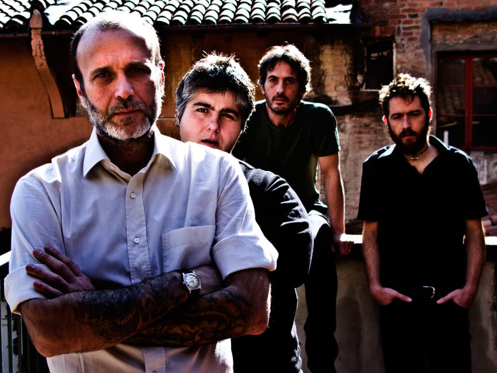

I Massimo Volume sono un gruppo rock italiano fondato a Bologna nel 1991 da Emidio Clementi, Umberto Palazzo, Vittoria Burattini e Gabriele Ceci.
Un appassionato di scrittura, un amante del rock, una batterista ed un chitarrista accomunati dall'orientamento politico, il rifiuto dell'oppressione, l'attivismo e l'amore per la musica.
Nel 1992 in una cantina registrano un demotape che include quattro brani, chiamato il Demo Nero per il colore della sua copertina, che ottiene un discreto successo, incuriosendo alcuni produttori dell'epoca.
L'unicità dei Massimo Volume risiede nella sinergia che si forma tra testi poetici e suoni alternativi da cui emerge una realtà cantanta con sottile intellettualità, ma con parole estremamente quotidiane nella loro cupezza.
Nel 1993 giungono alla Underground Records, etichetta indipendete con la quale pubblicano il loro album di esordio Stanze.
Nel 1994 vengono messi sotto contratto dalla Warner, per la quale pubblicano Lungo i bordi e Club Privè.

Dopo un iniziale scioglimento nel 2002, dovrà arrivare il 2008 per avere loro notizie. I Massimo Volume vengono invitati al Traffic Festival 2008 di Torino su richiesta del Museo del Cinema di Torino che domanda loro di sonorizzare il film La caduta della casa Usher di Jean Epistein.
Sempre in occasione di questo festival tornano a suonare dal vivo il 12 luglio 2008 seppur con qualche cambiamento all'interno del gruppo, ovvero l'arrivo del nuovo secondo chitarrista Stefano Pilia.
L'evento di Torino non sarà un episodio isolato, ma la rinascita di un progetto musicale che non ha come intenzione un nostalgico ritorno al passato, ma un nuovo capitolo post-rock.
Gli album successivi sono: Cattive abitudini, Aspettando i barbari e Il Nuotatore.
Con voto unanime abbiamo deciso che, per il nostro personalissimo gusto, il brano più esemplificativo è Le nostre ore contante dell'album Cattive Abitudini, che consideriamo il migliore della discografia.
JOE CASSANO